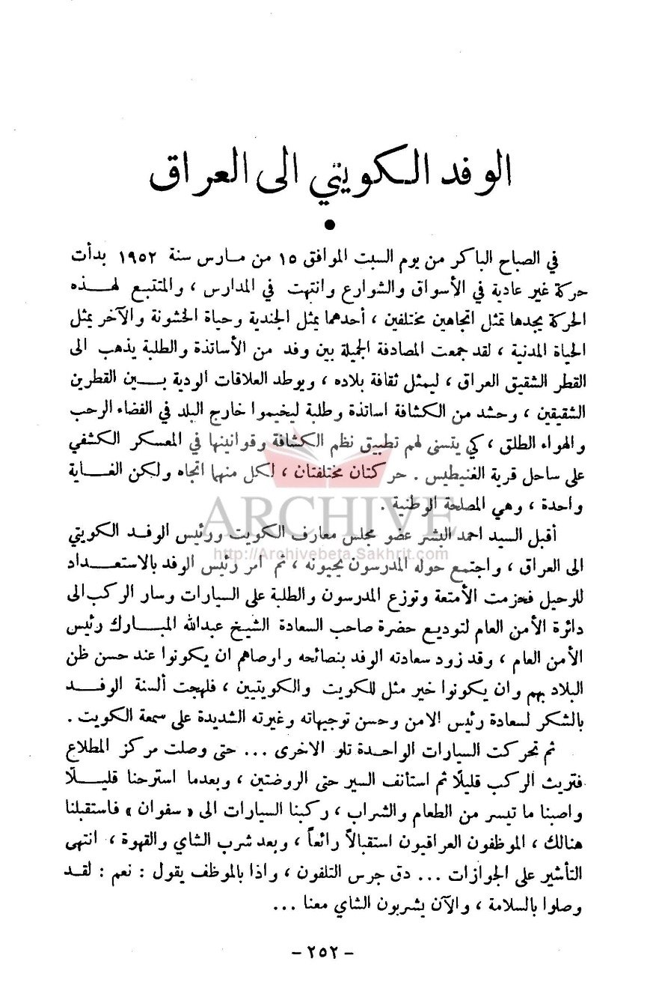
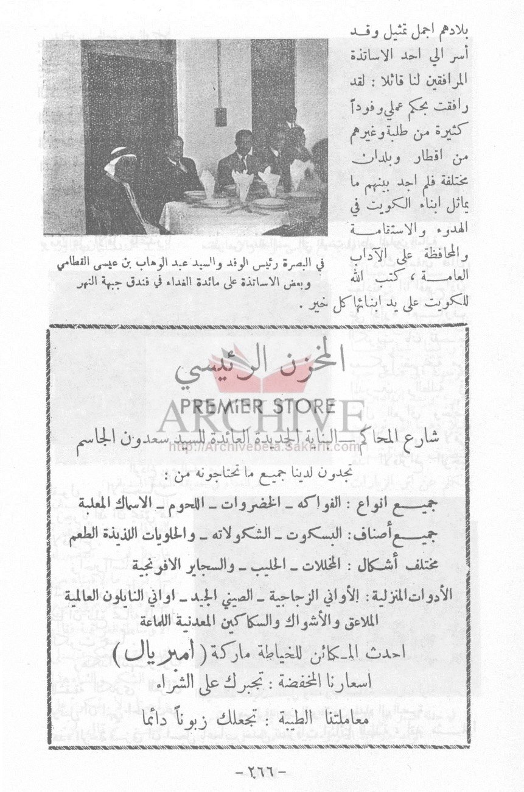

March 1952 · Magazine article, «Al-Wafd Al-Kuwaiti ila Al-Iraq», pages 252, 253 and 266
Abdulwahab bin Eissa Al-Qatami welcomes the Kuwaiti school delegation in Basra
What it is
An illustrated account of the delegation of Kuwaiti teachers and students that left for Iraq in March 1952, led by Ahmed Al-Bishr of the Education Council. After calling on the governor of Basra, the delegation went to its hotel: «there we met Mr Abdulwahab bin Eissa Al-Qatami, we greeted him and sat talking of many things; then we were invited to lunch, and Mr Abdulwahab Al-Qatami kindly joined us», before they walked the markets of Al-Ashar and took the train to Baghdad (page 253). A photograph on page 266 shows the head of the delegation with Abdulwahab bin Eissa Al-Qatami and some of the teachers at lunch in the Jabhat Al-Nahr hotel in Basra.
Why it matters
Shows Abdulwahab bin Eissa Al-Qatami in Basra in 1952, where he lived after the war, receiving a delegation from Kuwait, with his photograph.
Page copies



Others named
Sources
«Al-Wafd Al-Kuwaiti ila Al-Iraq», pages 252, 253 and 266, from the Sakhrit magazine archive
How this text was made: The name of the magazine and the issue are not on the pages sent. Pages 254 to 265 describe Baghdad and the schools and do not name the family. The photograph does not say which man is which.
Open in the interactive site